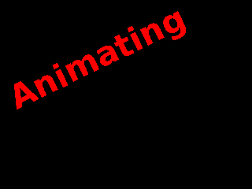
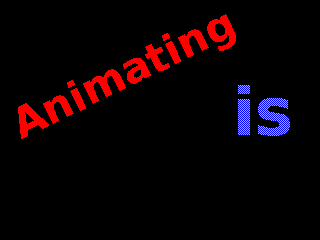
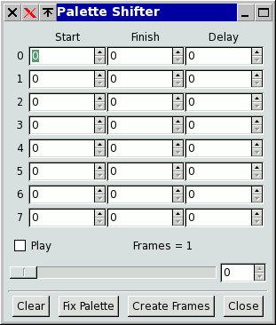
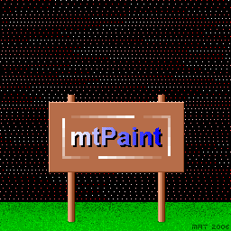
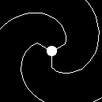
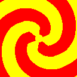
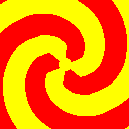

mtPaint je schopen upravovat snímky animací a také vytváøet animaèní snímky s pomocí vrstev. Pokud máte nainstalován program Gifsicle, mù¾ete otevøít, nebo vytvoøit animovaný GIF. Pokud ho u¾ nemáte, mù¾ete si ho stáhnout ZDE.
Pokud se pokusíte otevøít soubor GIF s více snímky, mtPaint to pozná a nabídne vám mo¾nost je upravit. Pokud to potvrdíte, mtPaint se vás zeptá na doèasný adresáø pro ulo¾ení tìchto snímkù. Je vhodné vytvoøit nový adresáø (pøes výbìr souborù) poblí¾ originálního GIF souboru kvùli snadné navigaci.
Potom, co Gifsicle vytvoøil tyto snímky, bude spu¹tìn nový proces mtPaint s názvy souborù snímkù v oknì pøíkazového øádku. Kliknete na název souboru a ten bude nahrán, tak¾e ho mù¾ete upravovat, jako normální obrázek.
jakmile dokonèíte editaci snímkù a chcete vytvoøit nový animovaný soubor, vyberte z menu Soubor 'Exportovat jako Animovaný GIF' pro otevøení dialogu. Okénko Zpo¾dìní animace nastavuje zpo¾dìní v krocích po 1 setinì sekundy mezi snímky. Tato hodnota by mìla být zapamatována, kdy¾ se animace otevírala, ale nemusí být pøesná, pokud vstupní soubor má více rùzných hodnot zpo¾dìní. Do polo¾ky názvu souboru zadejte nový název jako 'new.gif' a následnì soubor ulo¾te na va¹e oblíbené místo.
Zde je pøíklad krokù, které je tøeba vykonat pro vytvoøení jednoduchého animovaného GIFu:


Pou¾ití vrstev pøi vytváøení animace vám u¹etøí mnoho èasu a úsilí. Místo editace ka¾dého snímku po pixelech nastavíte klíèové snímky definicí pozic v¹ech vrstev. Jakmile jste spokojeni s rozmístìním, mù¾ete vytvoøit v¹echny snímky stiskem jediného tlaèítka. mtPaint spoèítá v¹echny mezilehlé snímky. Musíte být ov¹em velice dobøe seznámeni s pou¾íváním vrstev, tak¾e pokud nejste, tak vám velmi doporuèuji pøeèíst sekci o vrstvách.
Jakmile pøijdete s nápadem pro va¹i animaci, musíte pøed pou¾itím mtPaintu nejprve pøipravit va¹e plány. Napøíklad musíte rozhodnout pár vìcí, jako je velikost výsledného obrázku, poèet snímkù za sekundu, poèet barev a celková doba bìhu animace.
Pøed zahájením práce na animace je vhodné vytvoøit nový adresáø pro umístìní v¹ech obrázkových souborù, co¾ vám u¹etøí mnoho starostí s prací se soubory. Následnì vytvoøíte obrázek pozadí, který urèí rozmìry finální animace. Nakonec vytvoøíte a ulo¾íte ka¾dou obrázkovou vrstvu, kterou chcete mít v animaci.
Jakmile máte v¹echny obrázkové vrstvy pøipravené, mù¾ete parametry animace nastavit pomocí polo¾ky 'Vrstvy->konfigurovat animaci'. Zde urèíte první a poslední èíslo snímku, jméno adresáøe pro ulo¾ení snímkù a rùzné dal¹í detaily.
Jakmile máte umístìné v¹echny vrstvy pro první snímek, vyberte polo¾ku menu 'Vrstvy->nastavit klíèový snímek'. Toto mù¾ete následnì provést pro dal¹í snímky animace. Na zálo¾de pozice konfiguraèního okna byste mìli mít následující dva øádky:
1 10 10 255 0
10 20 20 128 0
Tato vrstva zaèíná na pozici (10,10) ve snímku 1 a pøesune se na pozici (20,20) ve snímku 10 s neprùhledností mìnící se od 100% (255) do 50% (128). Ka¾dý ze snímkù 2-9 jsou mtPaintem spoèítány jako mezilehlé snímky. 0 na konci znamená, ¾e to bude rovná èára. Hodnota 1 znamená, ¾e mtPaint pøesune tuto vrstvu po lehce plynulej¹í trajektorii mezi danými body.
Zálo¾ka Cyklus se pou¾ívá pro urèení, v jakou chvíli jsou které vrstvy viditelné. Mù¾e být vlo¾eno a¾ 100 øádek v následujícím formátu:
frame1 frame2 layer1, layer2, layer3, ... , layer50
Na ka¾dém øádku mù¾ete mít a¾ 50 vrstev. Mezi dvìma snímky animace bude viditelná pouze jediná sekvence s ostatními vypnutými. Jak snímky narùstají, mude v sekvenci zobrazena dal¹í vrstva a pøedchozí bude skryta.
Napøíklad:
1 10 1, 2, 3
Bude støídat viditelnost vrstev 1, 2, 3 mezi snímky 1 a 10.
Normálnì bude 2. snímek vy¹¹í ne¾ snímek 1, ale pokud jsou stejné, mù¾ete manuálnì nastavit, které vrstvy jsou na snímku viditelné a skryté. Napøíklad:
15 15 10, 11, 12, -1, -2, -3
Zobrazí vrstvy 10, 11, 12 a skryje vrstvy 1, 2, 3 na snímku 15.
Následnì mù¾ete provést náhled animace stiskem tlaèítka Náhled (nebo pou¾itím menu Vrstvy) a posunováním posuvníku prohlédnout animaci. Pro zmìnu snímku mù¾ete také pou¾ít kurzorové klávesy, page up/down, nebo + èi -.
Jakmile jste s animací, co jste vytvoøili, spokojeni, mù¾ete snímky exportovat pou¾itím tlaèítka 'Vytvoøit snímky'. Pokud máte za¹krtnutou volbu GIF, tak mtPaint vygeneruje indexované GIF soubory. Pokud ne, tak vytvoøí vytvoøí RGB PNG soubory. Potom mù¾ete pou¾ít enkódovací software, jako Gifsicle, nebo mencoder pro vytvoøení souboru animace. Pokud enkódujete do GIFu, mtPaint se pokusí zavolat Gifsicle automaticky a vytvoøí pro vás animovaný GIF. Na GNU/Linux systémech mù¾e být také pou¾itý gifview pro zobrazení výsledku.
Zde je pøíklad, jak pøinutit mencoder pro vytvoøení MPEG souboru z RGB PNG souborù:
mencoder mf://*.png -mf fps=25 -ovc lavc -lavcopts vcodec=mpeg4 -o output.avi
Pro více informací, jak pou¾ívat mencoder nav¹tivte domácí stránku mplayeru ZDE
Pro více informací, jak pou¾ívat gifsicle nav¹tivte jeho domácí stránku ZDE
Pokud sestavujete obzvlá¹» dlouhou animaci, která potøebuje více jak 100 øádek v zálo¾kách pozice, nebo cyklus, mù¾ete jednodu¹e zkopírovat soubor vrstev a mít odli¹né soubory pro ka¾dou sekci animace. Napøíklad 'layers00001-00500.txt' mù¾e být prvních 500 snímkù a 'layers00500-01000.txt' mù¾e být 500 dal¹ích. Potom vytvoøíte snímky jako normálnì ve v¹ech pøípadech a spojíte je dohromady va¹ím oblíbeným enkódovacím software.
Zde je pár pøíkladù animací vytvoøených programy mtPaint a Gifsicle. Pro sta¾ení zdrojových souborù kliknìte na jednotlivé obrázky:
Aèkoliv je mtPaint primárnì urèen pro zpracování kreseb s indexovanou paletou, je také schopen vytvoøit RGB animace, které pou¾ívají vìt¹í plátno, vý¹¹í poèet snímkù za sekundu a rùznou prùhlednost vrstev. Zde jsou nìkteré pøíklady:
Posouvání palety je stará technika pou¾ívaná k vytvoøení iluze pohybu pomocí pøesunu barev mezi nastavenými limity. Proto¾e je tato technika zalo¾ena na paletì, tak funguje pouze na obrázcích s indexovanou paletou. Posunovaè palety v mtPaintu lze vyvolat volbou v menu Paleta, kde se vám zobrazí následující dialog:

Ka¾dý øádek reprezentuje posun palety v sekvenci, kde první dvì èísla pøedstavují první a poslední èísla barev urèených pro pøesun. Záporným znaménkem u èíslice otoèíte smìr posunování palety. Zpo¾dìní pøedstavuje poèet snímkù mezi dvìma pøesuny, kde nula znamená bez zpo¾dìní.
Zde jsou dva obrázky:


Pokud nahrajete do mtPaintu první obrázek a potom vyvoláte okno posunovaèe palety,
tak mù¾ete reprodukovat animaci zadáním tìchto dat:
13,6,0
50,19,0
51,82,0
Pro vyjasnìní, jak jsem vytvoøil tento obrázek, je zde verze obrázku s lehce odli¹nou paletou pro zvýraznìní skrytých barev:

Jakmile jste vytvoøili animaci, se kterou jste spokojeni, mù¾ete vytvoøit animovaný GIF pomocí tìchto krokù:
Zde jsou dal¹í pøíklady pøesunování palety spoleènì se zdrojovými obrázky a vstupy potøebnými pro jejich vytvoøení:
1,60,0
 1,16,0 
 1,16,0 
1,16,0 